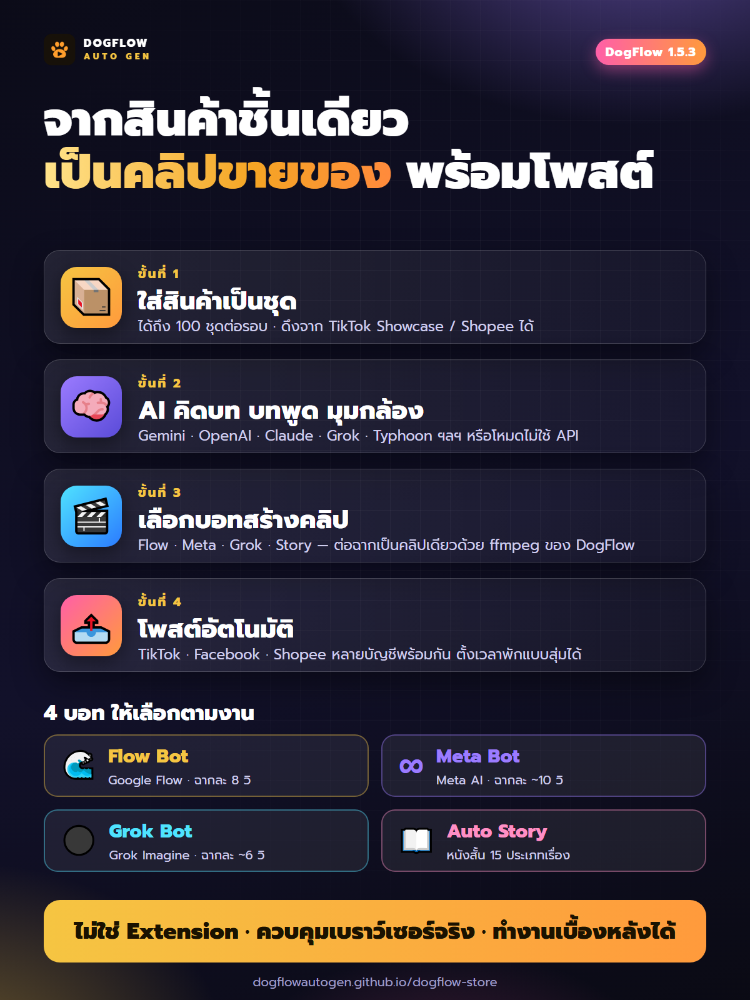

หน้าแรก › ฟีเจอร์ของโปรแกรม
ฟีเจอร์ของ DogFlow Auto Gen
DogFlow Auto Gen รวมทุกขั้นตอนของการทำคลิปขายของไว้ในโปรแกรมเดียว นี่คือสิ่งที่โปรแกรมทำได้

Auto คลิปขายของ — ปักตะกร้าอัตโนมัติ
ใส่สินค้าเป็นชุด (ได้ถึง 100 ชุดต่อรอบ) โปรแกรมคิดบท สร้างภาพ ทำคลิปมีเสียงพูด แล้วปักตะกร้าสินค้าให้เอง ตั้งเวลาพักระหว่างงานแบบสุ่ม แล้วปล่อยรันได้ทั้งคืน
Meta Bot — ให้ Meta AI คิดบทและเจนคลิป
ให้ Meta AI คิดบท บทพูด และมุมกล้อง แล้วเจนคลิปแนวตั้งที่มีเสียงในตัว ฉากละ 10 วินาที ต่อได้สูงสุด 8 ฉาก รวมได้ราว 80 วินาทีต่อคลิป
Grok Bot — เจนคลิปด้วย Grok Imagine
ให้ Grok Imagine สร้างภาพและคลิปแนวตั้งจากบทที่ AI คิดให้ แล้วต่อฉากเป็นคลิปเดียวด้วยระบบต่อฉากของ DogFlow เอง (ไม่ใช้ปุ่มต่อคลิปของ Grok) ใส่สินค้าเป็นชุดผ่านคิวได้เหมือน Meta Bot เชื่อมบัญชี Grok ได้หลายบัญชี มีโหมดเตรียมชุดถัดไปล่วงหน้า (Turbo) บัญชีฟรีได้คลิปฉากละราว 6 วินาที และมีโควตาสร้างวิดีโอต่อวันตามที่ Grok กำหนด โปรแกรมตรวจโควตาก่อนเริ่มรันให้
Flow Bot — ภาพและคลิปด้วย Google Flow
สร้างภาพและคลิปด้วย Google Flow ฉากละ 8 วินาที ต่อได้สูงสุด 8 ฉาก รวมได้ราว 64 วินาทีต่อคลิป เลือกเอนจิน Studio หรือ Turbo ได้ตามงาน
Auto Story — แต่งหนังสั้นจากหัวข้อเดียว
ใส่หัวข้อเดียว โปรแกรมแต่งเรื่องสั้น ฉากละ 8 วินาที ต่อได้สูงสุด 8 ฉาก ตัวละครพูดได้ เลือกประเภทเรื่องได้ 15 แบบ (เช่น การ์ตูน/แอนิเมชัน ละครคุณธรรม สยองขวัญ โรแมนซ์ แก้แค้นสะใจ หรือกำหนดโครงเรื่องเอง) และแทรกสินค้าเข้าไปในเรื่องได้อย่างเนียน ๆ เหมาะกับคลิปที่อยากให้ดูเป็นเรื่องราวมากกว่าโฆษณาตรง ๆ
สองเอนจิน Studio / Turbo
เลือกความเร็วหรือความเสถียรได้ตามงาน และมีระบบกู้คืนงานค้างอัตโนมัติ ไม่ต้องเริ่มใหม่ทั้งหมดเมื่องานสะดุด
ไม่ใช่ Extension ไม่ใช่แอป (Application) แต่เป็น Browser Automation
ระบบ Automation ที่ทรงพลัง — DogFlow Auto Gen เปิดและควบคุมเบราว์เซอร์จริง (Edge / Chrome) ให้ทำงานแทนคุณโดยตรง ไม่ได้เป็นส่วนเสริมที่ฝังอยู่ในเบราว์เซอร์ จึงทำงานเบื้องหลังได้ ย่อหน้าต่างหรือเปิดโปรแกรมอื่นทับได้ ไม่ต้องติดตั้งส่วนขยายในเบราว์เซอร์ และไม่แย่งเมาส์ของคุณ
ทำงานเบื้องหลัง ไม่ขวางงานของคุณ
ย่อหน้าต่างเบราว์เซอร์ของ Bot ลงแถบงาน (Taskbar) หรือเปิดโปรแกรมอื่นทับได้ Bot ยังทำงานต่อเต็มกำลัง ไม่แผ่ว ไม่ค้าง หาปุ่มเจอและกดได้ตามปกติ ทั้งตอนเจนคลิปและตอนโพสต์คลิป ใช้ได้ทั้งเบราว์เซอร์ Edge และ Chrome กดปุ่ม "ดูหน้าต่าง" เพื่อเรียกหน้าต่าง Bot กลับมาได้ทุกเมื่อ และโปรแกรมกันคอมพิวเตอร์หลับและจอดับระหว่างรันงาน (ไม่รวมการพับฝาโน้ตบุ๊ก) ไม่ใช่ Extension ไม่ใช่แอป (Application) แต่เป็น Browser Automation — ควบคุมเบราว์เซอร์โดยตรง ไม่ขยับเมาส์จริงของคุณ จึงใช้เครื่องทำงานอื่นไปพร้อมกันได้
สลับบัญชีสำรองอัตโนมัติ (Flow Bot)
เมื่อบัญชีมีปัญหากลางคัน เช่น เครดิตหมด ชนเพดานต่อวัน หรือโดนบล็อก (reCAPTCHA ติดกันหลายชุด) โปรแกรมย้ายชุดที่ค้างไปทำต่อที่บัญชีสำรองที่เชื่อมต่อไว้ให้เอง ตั้งให้สลับทุกกี่ชุดก็ได้ และมีการ์ดแจ้งว่าย้ายจากบัญชีไหนไปบัญชีไหนเพราะอะไร
โพสต์ให้อัตโนมัติ
เชื่อม TikTok · Facebook · Shopee และรันหลายบัญชีพร้อมกันในเวลาเดียวกัน
เลือก AI ได้อิสระ
รองรับ Gemini · OpenAI · Claude · KIE · Qwen · DeepSeek · Grok และมีโหมดที่ไม่ใช้ API
License ผูกกับบัญชีของคุณ
คีย์ส่งเข้าหน้าโปรไฟล์อัตโนมัติหลังยืนยันการชำระเงิน ดูอายุและจำนวนเครื่องที่ใช้ได้ในโปรแกรม และมีปุ่มอัปเดตโปรแกรมให้กดเองเมื่อมีรุ่นใหม่
ข้อกำหนดเครื่อง
- ต้องมี Gemini Ultra หรือ Pro
- ใช้บน Windows (Notebook / PC)
- ใช้ผ่านเบราว์เซอร์ Google Chrome หรือ Microsoft Edge
- ไม่รองรับมือถือ / iPad / Tablet
อยากรู้ขั้นตอนการใช้งานจริง อ่านวิธีทำคลิปขายของ TikTok ด้วย AI ทีละขั้นตอน
สมัครสมาชิกฟรี เลือกแพ็กเกจ แล้วรับ License key ในหน้าโปรไฟล์หลังยืนยันการชำระเงิน
ดูแพ็กเกจและสั่งซื้อ →